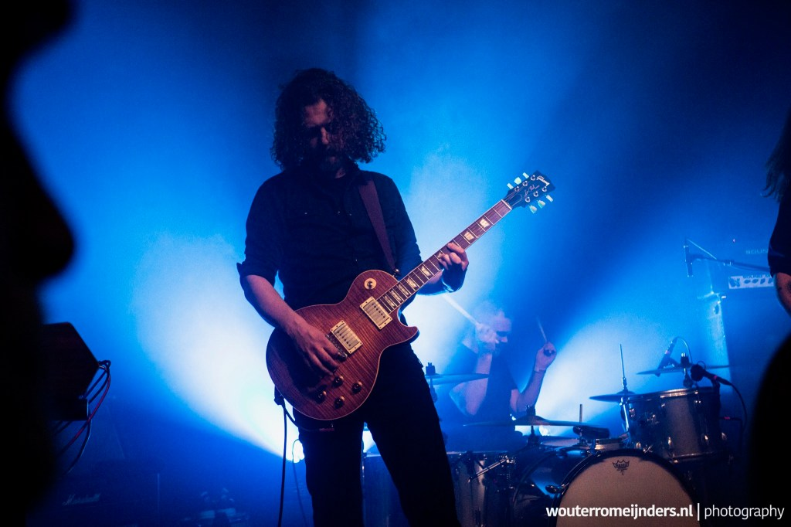

Interview – Boudewijn Bonebakker – Gorefest
Picture from Wouterromeijnders.nl
When did you start playing guitar and what guitar and equipment did you start on?
My first guitar was a Les Paul model by Custom. I played through a tube radio. I started when I was about 15/16 years old. My goal was to write songs.
Which bands inspired you to start playing guitar and are there certain riffs or songs that specifically motivated you to start playing guitar?
Wire, The Lyres, The Nomads, especially the songs Rat Fink a Boo-Boo and Five Years Ahead Of My Time (Third Bardo cover) gave me the urge to make similar noise. Killing Joke felt way beyond my league but I adored their sound.
When did you really feel your guitar playing and equipment got more professional and you thought: “Yes, this is the sound I really like!” ?
With Erase when we bought Les Pauls and Dual Rectifiers. But it was more of a feeling like “this is getting in the right direction, I still have a lot to learn”.
Do these two go hand in hand or did it evolve differently for your playing and your equipment?
It is a development I re-experienced a couple of times. Later, when I started to use Marshalls again the sound evolved more into what came directly from me, the player, meaning my fingers and plectrum. Things got more organic you could say. Equipment started to become less important (maybe because of the equipment). For me the notes, the playing had become the point of what was going on.
I played a lot on rental amps and cabs at fly-in shows and festivals. Those rentals worked fine most of the time. The sound wasn’t all that different apart from the odd nuance. Of course those nuances were very noticeable for me. But that had as much as anything to do with the acoustics (or lack thereof) and cables that were too long. In the trenches, through the p.a. systems I don’t think it was all that noticeable. Besides, the ear adapts fast and perfect conditions can barely be achieved in the studio, let alone on stage. So better focus on playing good. Which is difficult enough.
Playing music and dealing with different circumstances had its effect: letting go of trying to control what cannot be perfectly controlled, gaining confidence. Adapting and improvising was the challenge, not perfection.
Much later, after Gorefest, I solely used vintage amps and cabs and that made a huge difference. Way more distinct sparkle and punch, totally different reaction from the strings. But that’s another story.
Do you recall using what kind of amps, guitars, pedals and pickups on the albums? If so, would you mind sharing them? (for example: for album X we used a Mesa Boogie Dual Rectifier (2 channel) and Gibson Les Paul standard with a TS9 as overdrive pedal with Marshall 1960A cabs)
When I joined Gorefest I had a JCM900. It wasn’t very reliable, or rather, the general electricity/power situation still varied at places in the early nineties, so I blew the occasional fuse.
I switched to a 19” rack with a Tube Works MosValve MV962 power amp/Peavey T.G. Raxx Tube Preamp combination which I used on the False recordings. Lots of knobs to give me the illusion of control. I think I used a Marshall Guv’nor pedal at some point as well, for better gain.
My guitars at the time were a Bich copy and a blue Ibanez Strat-like thing with SSH configuration and a Floyd Rose trem. A Boss EQ pedal was used for boost.
For Erase Frank and me both got a ’92 Les Paul Standard and a first generation Dual Rectifier. And with Soul Survivor our set-up was completed with two stacks of purple Marshall reissue cabs with greenbacks (extended bottom cabs which we used up till Rise to Ruin). They came with a JMP1959 (if memory is correct) which I didn’t really know what to do with. That gear put us into a certain direction sound wise. The Les Paul was a relief because of the hard tail. No more counter bends when bending strings.
Soul Survivor was full on Les Pauls with the Standard and a Classic Plus Burst. All with stock pu’s at the time. Later I switched to Seymour Duncan “Seth Lover” pu’s on the Burst. Pedals varied. Whatever was needed. My live set-up was with a CryBaby and a tuner. Gain was still quite maxed out. Somehow that made me feel less insecure about my playing. In my mind I was still learning to become a proper player.
With Chapter 13 the Boss HyperFuzz and a MXR phaser was added. Live I started to become reluctant to bring the Burst. On the album I used a ’86 Telecaster so I used that live as well. It held the drop-A tuning better. Thinking about it, that one must have cut through the mix properly.
The two reunion albums were full on Marshall 50w Plexi and Les Paul vs. Flying V. My pedalboard got an upgrade with a Flanger (Aria) and a MXR Dynacomp which I used as a boost. I really loved the Flying V and still kind of regret selling it. That guitar played like a dream.
I have noticed the difference in sounds over years of your albums; did you switch to other amps, guitar and pickups and do you also feel the amps were a better fit for you over the years? Specifically the later albums the guitars sounded more fierce and direct and with more sustain.
We rolled back on the gain, hence the more punchy sound, and the Marshall had a lot less low-end. Low-end, as it appeared, wasn’t needed that much as we thought. I started realizing that the low tuning did the trick well enough. It interfered severely with the kick drum though. Also my playing had gotten a lot more advanced. That had an effect on the sound as well.
If I remember correctly and saw the video’s, you moved from Mesa Boogie Dual/Triple rectifiers to Marshall’s: can you tell me a bit more about this change?
During the hiatus I sold all my gear. I needed a new amp for the reunion and Arjan Lucassen lent me a heavy modded Marshall 1987x reissue that used to belong to Accept. It had an extra gain stage. After a while I found a 1987x from 1979 which I used alongside to the one from Arjan. It is more or less a 50w version of the super lead. Due to the so called “brown sound mod’ it has, that one sounds a lot beefier opposed to the very snarly midrange of the Accept Marshall. I kept using my own 1987x till ’21 or so. Very, very nice amp.
Did you notice a better sound when using 2 different amps/sounds in the overall band setting? (Marshall more EL34 mid sound and the Mesa Boogie Dual Rectifier 6L6 lower mids sound)
I’ve always been on the hunt for a cut-through sound. My dogmatic views prevented me from making certain choices. For instance, single coils have long been taboo for me. Also knowledge wasn’t that widespread back then. Pots and caps in the guitar, speakers, it all was unknown territory for me. I knew this though: the Mesa lacked the edge I was looking for. Somehow a bit too neat for my taste. I like the throaty snarl that Marshalls can have.
But in the end it was just how things presented themselves. Frank kept using his Dual Rectifier simply because he didn’t sell his. And it worked. We never gave it too much thought. It just worked. Or at least the studio people thought so. Or maybe they didn’t but just made it work. A trick we used for La Muerte and Rise to Ruin was: do one channel with the rectifier on the clean channel and volume maxed out and double that with a channel with Marshall in high gain setting.
Have you modded any of the guitar gear you have or do you use the stock/default setup of the guitars, amps or pedals?
Mostly stock/default. As said before I used a SD-SethLover pick-up on my Burst but that’s about it. The Marshalls were modded when I got (to use) them.
Can you tell me a bit more about the thick strings you use; how do they help your tone and does it help with playing as well? (why wouldn’t a thinner set of strings work for you?)
As soon as I joined Gorefest we tuned down to B. Regular strings were too thin and too flabby to play in tune. Simple as that. I think Frank used 011. The thickest round wound available to me at the time was 012 so I used those for a long time (I think up to Soul Survivor). After that 056 got available for the sixth string. So I combined that one with a 010 set, which made sense to me, and I saved the 010 strings. I still have a pile left for breakage. When 7-string sets became a regular thing, supply got easier. For me it was always a tuning thing. After Gorefest I even played 014 for B-tuning. Of course thinner strings give a snappier sound but I learned that later on. It would probably have helped in the production on some albums to use thinner strings because we tended to cluster in the bottom-end.
How relevant is the speaker cab for you? Do you use what is at the venue, hook up to the FOH or do you prefer to play a default cab like a Mesa 4×12 with V30 speakers or something else?
In recent years I’ve had the privilege of playing a vintage cab with G12H-30 pre-Rola Celestions. I can tell you, nothing compares. Nothing comes even close. The G12H-30 already have been my speaker of choice since the 2000’s or so. They sound more “brown”. During the Soul Survivor/Ch13 days I played greenbacks most of the time, using my own cabs. But these were all new made… I’ve always hated V30’s.
What is your favorite guitar atm and why?
All the guitars I kept are favorite. I recently bought a Guild X-175B which I love. The closest I will ever get to a Gibson ES295. But if I had to bring with me one guitar to a deserted island it would be my black LP Standard. I more or less fused with that guitar.
If you could choose one amp to play for the rest of your life (can also be a modeler or profiler); which one would it be for you and why?
Oh I don’t know, playing a 50’s tweed one time would make me happy. Other than that I’m ok with whatever is available (up to a certain standard).
Which album are you most proud of as a guitar player?
I’m proud of all the albums I played on. They all fit to the edge of my abilities of the period.
The direction of the albums changed a lot over time for Gorefest which I really liked; it showed that you want to try different things and don’t want to stick to 1 genre or style: how do you perceive this? For example I think the soul survivor album showed more of your classic roots as the former albums but later on the albums were more brutal again. Is that how you guys felt at the moment or more something you wanted to try as a band?
I would say Soul Survivor was more of a research album, a schooling you could also say. And for me that has been most of the motivation. We needed to advance on our writing skills and by studying the songs of Thin Lizzy, the riffs of Trouble, Sabbath and other doomers we tried to get back to basics. Speaking of ‘my classic roots’ is a bit of a stretch. At the time our thoughts were: the classic roots of metal are not something to be neglected.
My own ‘roots’ would be sixties garage-rock, Sonics, 13th floor Elevators, fuzz and tremolo sounds. On the other hand I came from the industrial and noise sounds of Einstürzende Neubauten, Birthday Party and Big Black. Biggest subliminal influences have been early Killing Joke and Wire. I got to know both their music around 1982 and it changed me forever. They shaped my ideal for sound, the noise I always chased. Later I recognized something similar in Neil Young’s Crazy Horse. Something massive, humongous.
Passive vs Active pickups: which one do you prefer for your style and band and why?
Passive, low output. No further comment.
What is the most consistent item in your guitar rig and why?
Green Tortex triangle picks. Never change a winning team. I hardly ever lose one and they sound perfect to me, organic.
Which (riff of) one of the songs you wrote are you most proud of and why?
Babylons Whores because it started as a wink towards Nile Rodgers’ funk/disco style and exploded into an orgy of doom. I originally wanted the blast-riff to stay on the same chord but got won over by Ed to do otherwise. We weren’t that convincing in the monotone riffing. Groove is way more important if you go monotone and we couldn’t deliver grooves dominant enough to transcend beyond harmony. So when the vocals kick in, the riff got up a few notes and you get a more harmonic result. I’m glad we made that choice. I think that whole song is monumental and that contribution gave it balance and completed it.
Do you use a certain guitar playing technique that is instantly recognizable for who you are as a guitar player? (muting, blues licks, power chords/barre chords, pinch harmonics)
I use regular and fairly traditional rock and metal techniques. Nothing special. I’m a strong advocate for alternate picking. I hope I’m somewhat recognizable for my sense of melody, harmony and counterpoint.
Which guitar players of current existing bands inspire you as a guitar player and why?
Nowadays I like to hear Tom Bukovac play every now and then. Maybe also Brian Setzer needs mentioning.
Last but not least: any last words or tips for guitar players out there?
Write songs and riffs, as much as you can. And learn to use alternate picking consistently.
Listen to Gorefest on Spotify hereListen and view some Gorefest clips on Youtube here